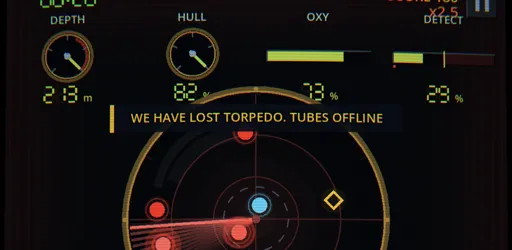

Four small pieces of play for the homepage, each with options to pick from. Nothing here is built: these are still frames of the moment that matters, drawn in the homepage's own frame at phone size. Every piece moves only when someone makes it move (D-019), stores nothing, and stays still with reduced motion. Pick any, all or none; the ROADMAP row says P2.1m waits for the 26 November review unless you make an exception.
1. Six keep-ups: the finish
Today the sixth hit sends the ball straight home and the Play button bobs ("Play a real one"). It ends quietly for the one thing on the page you've just won at.
aidoo
6 / 6
A. A burst off the paddle. The sixth hit throws six sparks, one per keep-up, in the games' colours; they fall away as the ball heads home.
aidoo
B. A trail home. No paddle now: the ball arcs back to the wordmark, dropping a dot of every colour it picked up on the way.
aidoo
▶ Play a real one
C. The mark answers. The ball lands home and three rings go out from it in the games' colours, as the Play button turns up in the last colour it was.
2. The o's watch the ball (D-020's held idea)
While the ball is out, the two o's of "doo" follow it; when it comes home they blink. This makes the wordmark a face, so it's the biggest change to the mark here. Shown larger than the header so you can see it.
aidoo
A. Pupils. A small dot in each o's middle, the ink's colour, sliding to look at the ball (here up and to the right). Gone when the ball is home.
aidoo
B. The blink. The ball lands and both o's close to a line for a tenth of a second, then open. With A, it's one piece; on its own, it's the quiet version.
aidoo
C. Pupils in the ball's colour. As A, but the pupils wear whatever colour the ball has picked up, so the face and the ball read as one toy.
3. Hovering a game card: one moment from the game
Desktop only (phones have no hover). The moment is the game's own footage, not something drawn in code (D-035): here a frame of Submarine Panic's real sonar scope stands in for a two-second clip of the sweep. Against the brand: brand.md says "Nothing moves on hover", so picking A or B changes that rule. Each clip needs recording from the game, about 150 to 300 KB each.
aidoo

Submarine Panic
Keep a failing Cold War submarine alive.
A. The clip plays in the art. Point at the card and two seconds of the game play once inside its picture, then the feature art comes back. The thin bar is the clip's time.
aidoo
Submarine Panic
Keep a failing Cold War submarine alive.
B. The art leans in. No clip: the feature art pushes in slowly while the pointer is on it. Cheap, no recording, but it's a camera move rather than the game.
aidoo
Submarine Panic
Keep a failing Cold War submarine alive.
C. Leave the cards still. The page's tint already answers the pointer. Keeps "nothing moves on hover" as it is.
4. Type "pour" and the pint opens
A secret for anyone with a keyboard: type p, o, u, r anywhere on the homepage (not in the chat box) and the pint comes up. No hint on the page; it's for whoever finds it, and for us to show people.
aidoo
A pint on us
A. It rises over the page. The pint slides up from the bottom as a sheet you can play there and then; Esc or a swipe down puts it away.
aidoo
p o u r
B. The letters show as you type. Each letter lights up in amber in the corner and the page washes towards the pub's colour; on the r, it goes to the pint's own page.
aidoo
▶ Pour a pint
C. The Play button answers. Nothing opens by itself: the Play button turns amber and says "Pour a pint", and Enter (or a click) pours it.